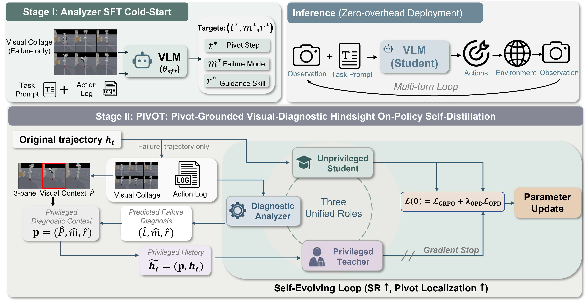
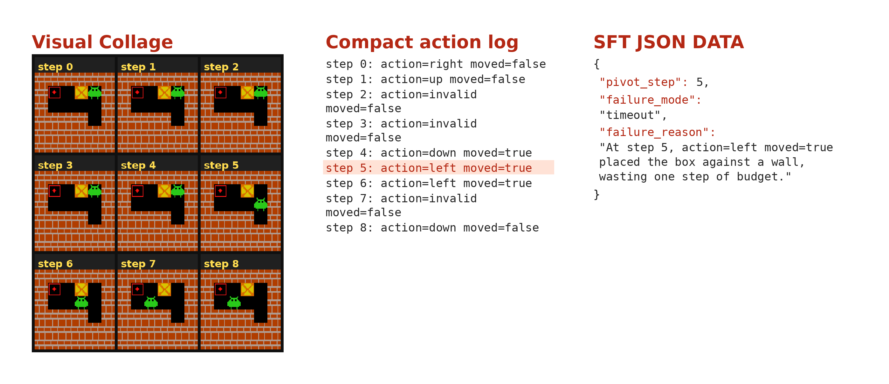
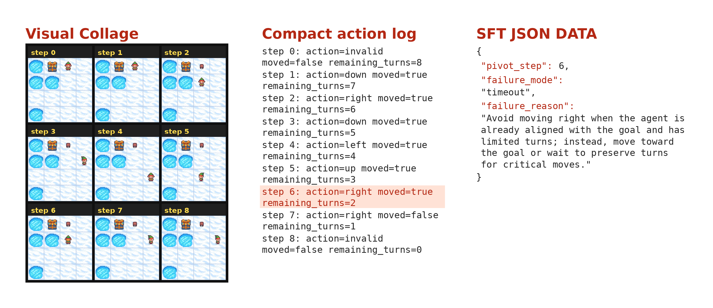
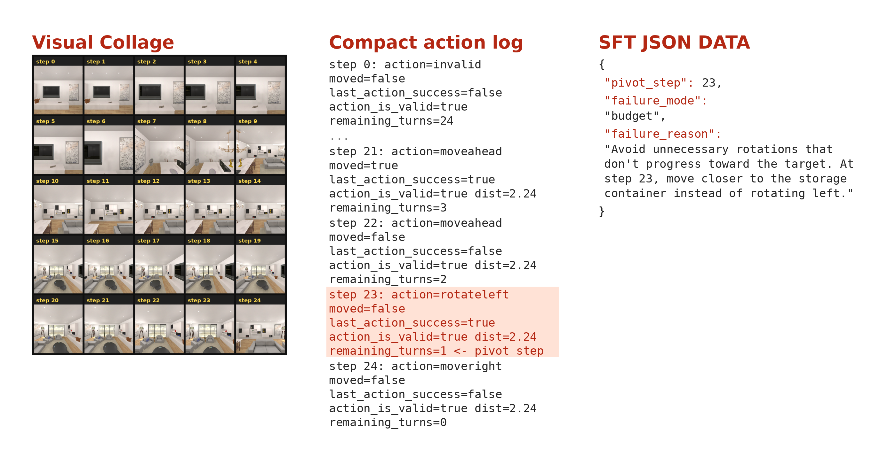
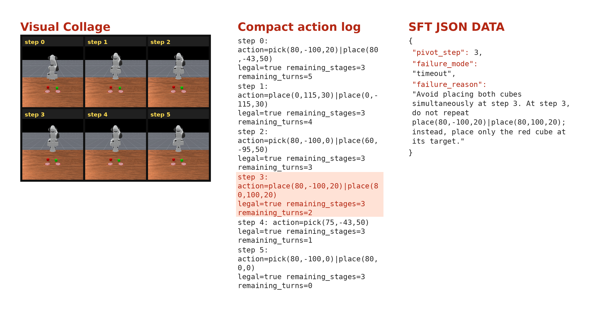
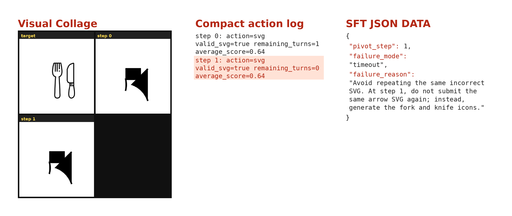
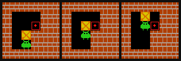
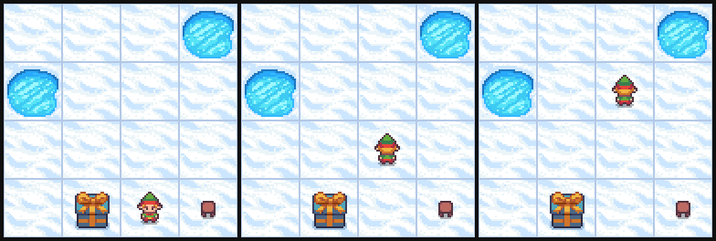
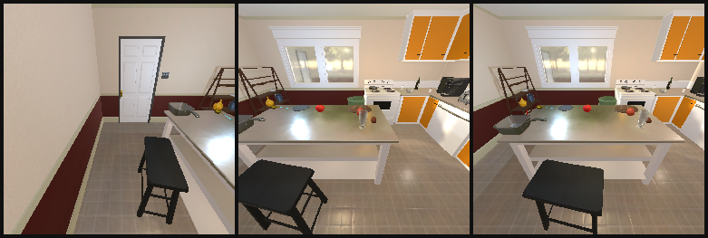
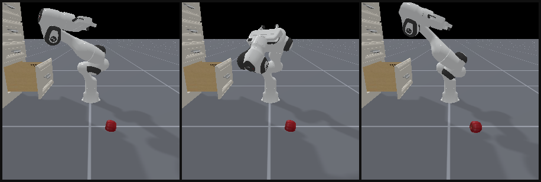

Motivating Analysis
Temporal Pivot Localization Drives Hindsight Recovery
Zero-Gradient Silence and Coarse Credit
GRPO normalizes episode returns across N rollouts into one scalar advantage Anrl and applies it uniformly to every action token. Evaluating untrained Qwen2.5-VL-3B-Instruct across five VAGEN tasks (N = 8) exposes two bottlenecks:
Failure mode A · σ = 0
Zero-Gradient Silence
Low baseline success on Sokoban (17.8%) and PrimitiveSkill (8.9%) creates frequent zero-variance groups where identical returns drive every advantage Anrl to zero despite distinct mistakes.
- 48.3%
- Sokoban groups with σ = 0
- 16.5%
- PrimitiveSkill groups with σ = 0
Failure mode B · σ > 0
Coarse Episode-Level Credit
A −0.1 step penalty keeps FrozenLake and Navigation at 0.0% σ = 0, and SVG at 0.9%. Yet nonzero variance still grades entire trajectories by length or score instead of isolating the fatal step t*.
- 0.0%
- FrozenLake & Navigation, σ = 0
- 0.9%
- SVG groups with σ = 0
Takeaway Uniform failure returns (σ = 0) silence GRPO updates entirely; even when σ > 0, episode-level credit never isolates the first unrecoverable step t*.
Counterfactual Rollback Probes: Local Suffix Rollback over Full-Horizon Restart
To test what actually drives hindsight recovery in OPD/OPSD, we probe failed rollouts of untrained Qwen2.5-VL-3B-Instruct along two axes: local suffix rollback at t* and full-horizon restart from t = 0 with diagnostic hints.

Regime 1 · Local Suffix Rollback
Restore simulator state to st*
Compares no-hint t* (pure reset), no-hint t*+1 (one step late), and diagnostic-self / teacher t* (appending πbase or Qwen3-VL-8B hints after resetting).
Regime 2 · Full-Horizon Restart
Restart from t = 0 without intermediate resets
Compares no-hint, generic planning advice, and diagnostic-self / teacher t0 (injecting the same pivot-grounded hints at turn 0 with no reset).
Formal definitions: pivot step t* & return lift rate ΔR
Pivot Step
t* = min( { t ∈ [0, T − 1] : Feas(st+1, T − t − 1) = 0 } ∪ { T − 1 } )
Return Lift Rate
ΔR = | { τ ∈ N− : R(τ̃t:) > R(τt:) } | / |N−|
- Feas(s, k)
- 1 if state s can still reach the goal within k steps
- τ̃t: ~ πbase
- single resampled continuation (n = 1) from t = t* (local suffix) or t = 0 (full horizon)
- N−
- failed rollouts of untrained Qwen2.5-VL-3B-Instruct shared across all probe arms
Empirical Findings
Finding 1 · Local Suffix
Exact timing governs local recovery
Resetting to t* with no-hint lifts ΔR by 3.3%–56.6%, while delaying one step (t*+1) collapses gains (PrimitiveSkill 18.4% → 8.7%; Sokoban 3.3% → 0.9%). Once restored, textual hints add little (≤ 2.2 points on most tasks).
Finding 2 · Full Horizon
Pivot diagnostics guide global restarts
Without resets (t = 0), pivot-grounded hints beat both no-hint and generic prompts on structured tasks (Sokoban 15.9% vs. 13.7% / 11.6%; PrimitiveSkill 44.7% vs. 40.2%). On open-ended Navigation, they still beat generic advice (48.6% vs. 45.1%).
Finding 3 · Silent Groups
Both regimes reopen GRPO signal
Both regimes cut σ = 0 group rates on sparse-reward tasks, dropping Sokoban from 48.3% to 32.8% and PrimitiveSkill from 16.5% to 0.5% (local-suffix probes: 37.8–41.7% and 3.8–6.0%).
Takeaway Local recovery depends strictly on exact timing at t* (making text redundant after a reset); without resets, pivot-grounded diagnostics outperform unguided restarts and generic prompts.
Resolving the Pivot Credit Assignment Dilemma via Visual Grounding
Pivot Credit Assignment Dilemma Local rollbacks at t* isolate recovery but require costly or unavailable simulator resets; full-horizon restarts avoid resets but waste rollouts on valid prefixes (t < t*) and dilute credit.
Can we embed pivot-grounded visual diagnostics directly into token-level updates without rollbacks or extra rollouts?
Principle I
Non-Invasive Pivot Grounding
Localize t* and diagnose failures directly from observable visual histories, with no hidden state access or resets.
Principle II
Counterfactual Credit Concentration
Convert localized visual hindsight into token-level updates on existing failed rollouts without re-sampling.
Principle III
Zero Test-Time Overhead
Internalize hindsight into policy weights so inference runs as a standalone Student with no extra models or prompts.
Method
PIVOT: On-Policy Self-Distillation via Pivot-Grounded Visual Hindsight
One shared policy πθ unifies Analyzer, Privileged Teacher, and Student during training, then ships strictly as an unprivileged Student with no rollbacks and no test-time overhead.

Roles
Reads the visual collage and action log to predict (t̂, m̂, r̂) without hidden state, and crops the 3-panel neighborhood Pt̂ = [ot̂−1, ot̂, ot̂+1].
Detached (stop-gradient) evaluator that re-scores the Student’s original failed tokens under privileged hindsight h̃t = (p, ht), with no extra rollouts.
Acts on ordinary history ht and trains with GRPO + confidence-gated OPD on failed rollouts, suppressing high-risk pivot tokens even when σ = 0.
Stages
Stage I (SFT): Pivot Grounding
3-epoch SFT on offline diagnostic triplets (t*, m*, r*) from visual collages and action logs (959–1,719 trajectories per task) to initialize θsft.
Stage II (RL): Token Re-Weighting
250 RL updates per task (N = 8; N = 4 on PrimitiveSkill) from θsft, distilling visual-diagnostic hindsight onto failed tokens via gated OPD.
Inference: Standalone Student
Strips Analyzer and Teacher; deploys purely as πθ(· | ht) with zero extra compute, parameters, or prompts.
Stage I (SFT): Non-Invasive Failure Diagnosis for Pivot Grounding
Each failed trajectory is labeled with a diagnostic triplet (t*, m*, r*) and paired strictly with observable inputs—a step-indexed visual collage C(τ), action sequence a0:T−1, and prompt q. Autoregressive SFT produces θsft with non-invasive pivot grounding.
Analyzer SFT Examples





Analyzer SFT splits
| Environment | Accepted | Train | Val |
|---|---|---|---|
| Sokoban | 1170 | 1053 | 117 |
| FrozenLake | 1375 | 1237 | 138 |
| Navigation | 959 | 863 | 96 |
| PrimitiveSkill | 1677 | 1509 | 168 |
| SVG | 1719 | 1547 | 172 |
Failure modes the Analyzer is asked to name
- Sokoban and FrozenLake:
timeoutif the goal is still reachable with unlimited steps,deadlockif it is not. - Navigation:
format,blocked,stagnation, orbudget. - PrimitiveSkill:
timeout,format,wrong target, ororder error. - SVG: the solver always labels the last scored canvas as
timeout; the Analyzer prompt still offers thetimeout/deadlockpair.
Stage II (RL): Counterfactual Token Re-Weighting via Visual-Diagnostic Hindsight
On each failed rollout, the 3-panel visual crop Pt̂ = [ot̂−1, ot̂, ot̂+1] pairs with (m̂, r̂) to form privileged hindsight p. The detached Teacher re-scores the Student’s original failed tokens under (p, ht), suppressing high-risk pivot tokens while leaving valid prefixes intact—even when GRPO advantages vanish (σ = 0). At test time, only the standalone Student remains.
Teacher Hindsight 3-Panel Visual Context




Joint objective & token-level loss
GRPO Objective
ℒGRPO(θ) = −𝔼[ mact min( ρt Arl, clip(ρt, 1 − ε, 1 + ε) Arl ) ]
Confidence-Gated OPD
ℒOPD(θ) = 𝔼[ 𝕀[R(τ) < Rsucc] · mact · gt · (sg[ℓttea] − ℓtstu) ]
Joint Objective
ℒ(θ) = ℒGRPO(θ) + λopd ℒOPD(θ)
- gt = σ(βopd δt)
- sigmoid confidence gate (βopd = 5) on privileged log-probability gap δt = ℓttea − ℓtstu
- λopd = 0.01
- balances RL exploration against token-level self-distillation (Agarwal et al., 2024; Lu et al., 2026)
- Failure mask
- applies to failed rollouts (R(τ) < Rsucc); SVG has no binary success bit, so every SVG trajectory is distilled
- Training budget
- Stage II runs 250 online RL updates on every environment, including Sokoban
Experiments
Evaluation Across Five Multi-Turn VLM Benchmarks
Evaluated across cognitive grid puzzles, embodied 3D control, and generative SVG reconstruction on three backbones, with zero inference-time overhead.
Experimental setup (environments, baselines, variants & implementation)
Environments & Metrics
VAGEN suite across three paradigms: Cognitive Grid Puzzles (Sokoban, FrozenLake), Embodied 3D Control (Navigation, PrimitiveSkill), and Generative Reasoning (SVG). Puzzle and control tasks report Success Rate (SR); SVG reports composite DINO + DreamSim similarity.
Backbones & Reference Baselines
Qwen2.5-VL-3B-Instruct, Qwen3-VL-2B-Instruct, and Qwen3.5-VL-2B. Compared against Vanilla-GRPO, SFT-GRPO (θsft without OPD), reproduced gated-OPD baseline SDAR (frozen Qwen2.5-VL-7B teacher, episode-level skills, all valid tokens), and world-model SOTA (VAGEN, GLANCE).
PIVOT Variants & Ablation Arms
All start from θsft and vary Teacher context p: P (panel), M (mode), M+P, and M+P+R (full default with guidance skill), plus negative control M+P+Random+R with random pivot indices.
Implementation Details
Stage I runs 3-epoch SFT. Stage II runs 250 RL updates on every environment (including Sokoban), applying confidence-gated OPD (λ = 0.01, β = 5) on failed trajectories (all trajectories on SVG).
Main Results
On Qwen2.5-VL-3B, PIVOT reaches 0.90 overall (+8% over SFT-GRPO, +13% over Vanilla-GRPO), surpassing GLANCE (0.86) and SDAR (0.79) with the largest lifts on Sokoban (+16%) and PrimitiveSkill (+6%). On Qwen3-VL-2B it reaches 0.92 (+12%), and on Qwen3.5-VL-2B it reaches 0.91 (+6% over SFT-GRPO, +26% over Vanilla-GRPO).
| Method | Cognitive Grid Puzzles | Embodied 3D Control | Generative Reasoning | All | ||||||||||
|---|---|---|---|---|---|---|---|---|---|---|---|---|---|---|
| Sokoban | Frozen Lake |
Navigation | PrimitiveSkill | SVG | ||||||||||
| Base | Com. | Avg. | Place | Stack | Draw. | Align | Avg. | DINO | DS | Avg. | ||||
| Open-source VLMs | ||||||||||||||
| Qwen2.5-VL-72B | 0.20 | 0.44 | 0.70 | 0.77 | 0.74 | 1.00 | 0.50 | 0.00 | 1.00 | 0.63 | 0.84 | 0.62 | 0.73 | 0.55 |
| Qwen2.5-VL-7B | 0.14 | 0.14 | 0.33 | 0.38 | 0.35 | 0.00 | 0.00 | 0.00 | 0.75 | 0.19 | 0.84 | 0.27 | 0.56 | 0.28 |
| Qwen2.5-VL-3B | 0.13 | 0.14 | 0.20 | 0.26 | 0.23 | 0.00 | 0.00 | 0.00 | 0.00 | 0.00 | 0.79 | 0.30 | 0.54 | 0.21 |
| VLM-R1-3B | 0.16 | 0.15 | 0.33 | 0.34 | 0.34 | 0.00 | 0.00 | 0.00 | 0.00 | 0.00 | 0.79 | 0.27 | 0.54 | 0.24 |
| Proprietary VLMs | ||||||||||||||
| o4-mini | 0.44 | 0.82 | 0.75 | 0.75 | 0.75 | 1.00 | 0.50 | 0.00 | 0.75 | 0.56 | 0.90 | 0.66 | 0.78 | 0.67 |
| GPT-4o | 0.43 | 0.54 | 0.75 | 0.69 | 0.72 | 0.50 | 0.63 | 0.00 | 0.88 | 0.50 | 0.91 | 0.69 | 0.80 | 0.60 |
| Gemini 2.5 Pro | 0.58 | 0.78 | 0.63 | 0.63 | 0.63 | 0.63 | 0.63 | 0.00 | 0.75 | 0.50 | 0.93 | 0.78 | 0.86 | 0.67 |
| Claude 4.5 Sonnet | 0.31 | 0.80 | 0.67 | 0.67 | 0.67 | 0.63 | 0.50 | 0.00 | 1.00 | 0.53 | 0.95 | 0.81 | 0.88 | 0.64 |
| Claude 3.7 Sonnet | 0.25 | 0.69 | 0.48 | 0.47 | 0.47 | 0.63 | 0.13 | 0.00 | 1.00 | 0.44 | 0.94 | 0.77 | 0.85 | 0.54 |
| Previous SOTA with World Model Reasoning for Visual State Reconstruction (Qwen2.5-VL-3B-Instruct) | ||||||||||||||
| VAGEN | 0.79 | 0.72 | 0.80 | 0.81 | 0.81 | 1.00 | 0.88 | 1.00 | 1.00 | 0.97 | 0.90 | 0.66 | 0.78 | 0.81 |
| GLANCE | 0.85 | 0.78 | 0.86 | 0.88 | 0.87 | 1.00 | 0.88 | 1.00 | 1.00 | 0.97 | 0.92 | 0.70 | 0.81 | 0.86 |
| Reproduced OPD Baseline (Qwen2.5-VL-3B-Instruct) | ||||||||||||||
| SDAR | 0.52 | 0.77 | 0.88 | 0.84 | 0.86 | 1.00 | 1.00 | 1.00 | 1.00 | 1.00 | 0.91 | 0.68 | 0.80 | 0.79 |
| PIVOT (Qwen2.5-VL-3B-Instruct) | ||||||||||||||
| Vanilla-GRPO | 0.78 | 0.71 | 0.87 | 0.75 | 0.81 | 0.92 | 0.86 | 0.89 | 0.93 | 0.90 | 0.90 | 0.66 | 0.78 | 0.80 |
| SFT-GRPO | 0.82 | 0.75 | 0.93 | 0.77 | 0.85 | 0.96 | 0.90 | 0.93 | 0.97 | 0.94 | 0.92 | 0.68 | 0.80 | 0.83 |
| PIVOT | 0.95+16% | 0.84+12% | 0.97+4% | 0.83+8% | 0.90+6% | 1.00+4% | 1.00+11% | 1.00+8% | 1.00+3% | 1.00+6% | 0.93+1% | 0.71+4% | 0.82+3% | 0.90+8% |
| PIVOT (Qwen3-VL-2B-Instruct) | ||||||||||||||
| Vanilla-GRPO | 0.77 | 0.89 | 0.97 | 0.73 | 0.85 | 0.80 | 0.67 | 0.78 | 0.79 | 0.76 | 0.90 | 0.68 | 0.79 | 0.81 |
| SFT-GRPO | 0.80 | 0.87 | 0.92 | 0.74 | 0.83 | 0.83 | 0.80 | 0.81 | 0.84 | 0.82 | 0.91 | 0.67 | 0.79 | 0.82 |
| PIVOT | 0.92+15% | 0.90+3% | 0.98+7% | 0.91+23% | 0.95+14% | 1.00+20% | 1.00+25% | 1.00+23% | 1.00+19% | 1.00+22% | 0.93+2% | 0.76+13% | 0.85+8% | 0.92+12% |
| PIVOT (Qwen3.5-VL-2B) | ||||||||||||||
| Vanilla-GRPO | 0.56 | 0.92 | 0.63 | 0.63 | 0.63 | 0.97 | 0.19 | 1.00 | 0.81 | 0.74 | 0.91 | 0.63 | 0.77 | 0.72 |
| SFT-GRPO | 0.75 | 0.93 | 0.91 | 0.86 | 0.88 | 0.94 | 1.00 | 1.00 | 1.00 | 0.98 | 0.91 | 0.61 | 0.76 | 0.86 |
| PIVOT | 0.90+20% | 0.95+2% | 0.94+3% | 0.86+0% | 0.90+2% | 1.00+6% | 1.00+0% | 1.00+0% | 1.00+0% | 1.00+2% | 0.93+2% | 0.72+18% | 0.82+8% | 0.91+6% |
Main results across five VLM agentic benchmarks. Vanilla-GRPO and SFT-GRPO denote pure RL and GRPO initialized after Analyzer SFT; SDAR is our reproduced gated OPD baseline. Cyan percentages on PIVOT are relative gains over SFT-GRPO in the same backbone block; muted rows follow VAGEN and GLANCE.
Ablations
Diagnostic Context Components
Across both backbones, failure-mode text (M) provides a strong base, adding the localized visual panel (M+P) lifts planning and control (3B Sokoban 0.86 → 0.90, SVG 0.84; 2B Sokoban 0.82 → 0.97), and the full stack (M+P+R) is the most reliable default—best on four of five tasks for 3B (0.95 / 0.84 / 0.90 / 1.00) and best overall for 2B (0.92).
Sensitivity to Pivot Localization
Replacing predicted pivots with random step indices (M+P+Random+R) degrades every benchmark (0.75 Sokoban, 0.69 FrozenLake, 0.80 Navigation, 0.87 PrimitiveSkill, 0.74 SVG), confirming that unanchored visual context injects misleading supervision.
| Variant | Sok. | FL | Nav. | PS | SVG |
|---|---|---|---|---|---|
| Qwen2.5-VL-3B | |||||
| M | 0.86 | 0.83 | 0.86 | 1.00 | 0.83 |
| M+P | 0.90 | 0.77 | 0.89 | 1.00 | 0.84 |
| M+P+R | 0.95 | 0.84 | 0.90 | 1.00 | 0.82 |
| M+P+Random+R | 0.75 | 0.69 | 0.80 | 0.87 | 0.74 |
| Qwen3-VL-2B | |||||
| M | 0.82 | 0.81 | 0.84 | 1.00 | 0.81 |
| M+P | 0.97 | 0.89 | 0.89 | 1.00 | 0.82 |
| M+P+R | 0.92 | 0.90 | 0.95 | 1.00 | 0.85 |
Hindsight context ablation. M denotes failure mode, P the localized 3-panel visual crop, and R the guidance skill. Bold marks the best cell within each backbone.
Training Dynamics and Efficiency

Self-Evolving Pivot Localization
Checked against FrozenLake’s shortest-path solver during RL, 15-step moving Analyzer accuracy (t̂ = t*) rises from ~0.56 to 0.90 by step 100 and holds near 0.95—forming a self-evolving loop that sharpens credit over training.

Trajectory Compression and Decision Efficiency
On Sokoban, both policies start near 8 turns. PIVOT drops below 4 turns within 120 updates and averages 3.4 turns over the final 50 steps versus 4.6 for Vanilla-GRPO, cutting deadlocks and redundant wandering.

End-to-End Training and Inference Efficiency
Shorter rollouts cut Sokoban step time from 102s to 95s. Including the 11-minute SFT warm-up, PIVOT finishes in 6.8h versus 7.1h for Vanilla-GRPO, and deploys with zero extra latency or prompt overhead.